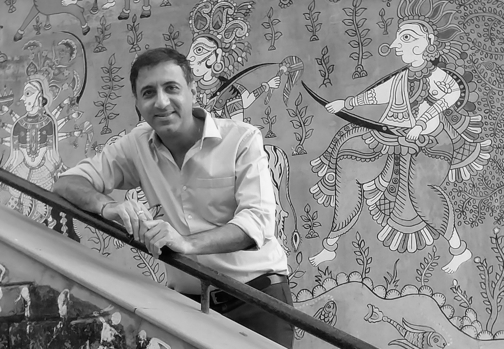

If you appreciate creativity and have a flair for inventive experiment and not really fond of too much extravagance- we are there for you.
Aakasa Designs, or just AaDS, is a small and enthusiastic Design Practice firm headed by Kumar Mangwani. The core team at AaDS are young designers with a vision- to give their best in whatever they pursue. They are constantly encouraged to take up their creative urges to accomplishment. Our inter-office design session’s focuses on personalized experience of the end user, while deliberating upon the design solutions within current trends. We find our creative excitement in such sessions. Hands on experience and attention to detail are valued most.
Our accomplished body of works shows a distinct and adaptable style with each of our projects carried out in Hospitality, Industrial, Education, Commercial and Residential. We approach every design sensibly with equal attention to aesthetics and common sense: qualities imbibed from master mentors and years of proficiency. We have always striven to achieve a balance between materialism and minimalism.
You have a reason to be here; 'you' and 'us' together can make that happen.
Why AaDS ?
We believe in creating your space which will want you to come back to it and to uplift your spirits. We love colors- the language of joy; we love natural materials-for its universal connection; we love earthy tones- to keep you grounded. Our small and dedicated team gets involved with your space and work from inside out. We pursue bespoke ideas for your place to have your `personality’, where you `can belong’ to which you can 'relate'.
With every project, we compete with our own creative side for a 'inventive better' that the 'preceding better'. That is why we are called Aakasa- the Limitless

Kumar Mangwani
With years of work experience, Kumar is liberal with the materials and trends. He has a wide bandwidth of working with versatile design genres after having worked with Architect Charles Correa and interned under Architect Hafeez Contractor- his two master mentors.
Kumar’s passion for photography and travel writings inspires him endlessly. His photographic interests in the Indian culture were displayed at three solo exhibitions at London, Pune and Mumbai. You can check these at